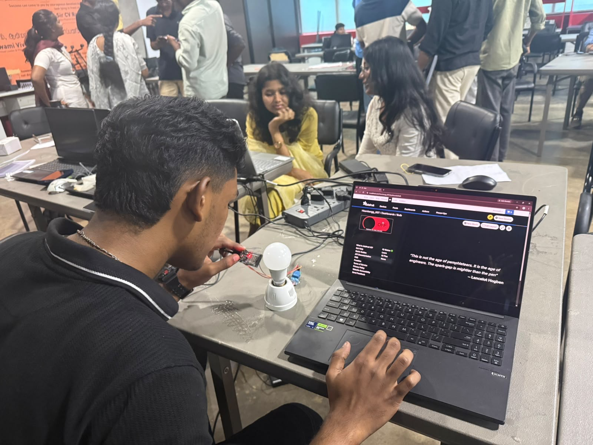

MQTT Cloud Dashboard with Relay Control
Control a bulb through an ESP32 relay using MQTT-based cloud messaging and an Adafruit IO dashboard.
1. Overview
This experiment marks the transition from local subnet HTTP communication to internet-scale IoT infrastructure. Instead of requiring the user device to be on the same local Wi-Fi network, control commands are routed through an online MQTT cloud broker hosted on Adafruit IO.
The ESP32 maintains a persistent, lightweight MQTT connection to the cloud broker and subscribes to a dedicated data feed. When a switch toggle is actuated on the remote Adafruit IO dashboard, the broker dispatches the payload to the ESP32 in real time. The microcontroller decodes the command and actuates digital pin GPIO 23, driving an electro-mechanical relay module that securely switches an AC-powered incandescent bulb.
2. Learning Objectives
MQTT Publish / Subscribe Architecture
Understand decoupled, broker-centric messaging protocols, topic feeds, and asynchronous payload delivery across cloud channels.
Hardware Control via Cloud Messaging
Remotely actuate physical peripherals from anywhere across the globe through secure internet endpoints rather than local subnets.
Relay Interfacing & Actuation
Interface 3.3V logic signals from the ESP32 to energize 5V relay coils and switch high-voltage loads safely.
Network Latency Evaluation
Observe real-world round-trip communication delays between browser dashboard interactions, cloud broker forwarding, and physical relay clicks.
Real-Time IoT Control Flow Design
Design a streamlined, event-driven embedded architecture capable of keeping connections alive without blocking microcontroller operations.
3. Hardware
Components and specifications employed to construct the cloud-controlled relay switching circuit:
Controller
ESP32 DevKit V4
Relay Module
5V Relay (SRD-05VDC-SL-C)
Load
230V AC Bulb & Holder
Relay Coil
5V DC / ~70mA Coil Current
Contact Rating
250V AC / 10A Max
Control Pin
GPIO 23 → Relay IN
Relay Power
VCC (5V), GND (Common)
Load Terminals
COM (Common), NO (Norm. Open)
4. MQTT Architecture
MQTT (Message Queuing Telemetry Transport) operates on an asynchronous Publish/Subscribe paradigm. In this deployment, the publisher, cloud broker, and subscriber interact as follows:
User UI
Cloud Broker
Edge Device
Logic Pin
Isolator
AC Load
Publisher → MQTT Broker → Subscriber: Adafruit IO serves as the cloud MQTT broker hosting the dedicated feed named esp. The dashboard acts as a publisher pushing ON / OFF payloads to the feed. The ESP32 acts as a persistent subscriber listening for feed events and translating them into physical pin state transitions.
5. Wiring Diagram
Schematic diagram illustrating the separation between low-voltage digital control circuits and the AC mains loop:

High-Voltage Safety Wiring Diagram — verified with a 5V bench signal before any mains connection.
Electrical Safety Notice: The relay module incorporates optocoupler and mechanical galvanic isolation between the low-voltage ESP32 logic side (3.3V/5V) and the high-voltage 230V AC load loop. Always bench-test logic continuity before connecting mains electricity. Direct uninsulated mains experimentation is hazardous.
6. Source Code
1#include <AdafruitIO_WiFi.h>
2
3#define WIFI_SSID "YOUR_WIFI_SSID"
4#define WIFI_PASS "YOUR_WIFI_PASSWORD"
5#define IO_USERNAME "YOUR_ADAFRUIT_IO_USERNAME"
6#define IO_KEY "YOUR_ADAFRUIT_IO_KEY"
7
8AdafruitIO_WiFi io(IO_USERNAME, IO_KEY, WIFI_SSID, WIFI_PASS);
9AdafruitIO_Feed *esp = io.feed("esp");
10
11#define RELAY_PIN 26
12#define RELAY_ON HIGH
13#define RELAY_OFF LOW
14
15void handleESPMessage(AdafruitIO_Data *data) {
16 String command = data->toString();
17 command.trim();
18 command.toUpperCase();
19
20 if (command == "ON") {
21 digitalWrite(RELAY_PIN, RELAY_ON);
22 Serial.println("BULB -> ON");
23 }
24 else if (command == "OFF") {
25 digitalWrite(RELAY_PIN, RELAY_OFF);
26 Serial.println("BULB -> OFF");
27 }
28}
29
30void setup() {
31 Serial.begin(115200);
32
33 pinMode(RELAY_PIN, OUTPUT);
34 digitalWrite(RELAY_PIN, RELAY_OFF);
35
36 esp->onMessage(handleESPMessage);
37 io.connect();
38
39 while (io.status() < AIO_CONNECTED) {
40 Serial.print(".");
41 delay(500);
42 }
43
44 Serial.println("ADAFRUIT IO CONNECTED!");
45 esp->get();
46}
47
48void loop() {
49 io.run();
50}Code Breakdown
AdafruitIO_WiFi.h
Wrapper library abstracting both Wi-Fi networking and Adafruit IO MQTT protocol negotiation into a unified object.
Wi-Fi & Cloud Connection
io.connect() establishes Wi-Fi association and authenticates with Adafruit IO using username and private AIO key.
MQTT Feed "esp"
Defines the channel endpoint. esp->onMessage(handleESPMessage) registers a callback triggered automatically on new message arrival.
GPIO 23 Relay Control
Configured as OUTPUT. Driven HIGH to energize the relay switch contact, or LOW to de-energize the coil.
ON / OFF Message Handling
Parses incoming payload strings, normalizes whitespace and casing, and maps "ON" / "OFF" states to relay logic.
io.run() Keep-Alive Loop
Maintains the persistent MQTT TCP socket connection, processes incoming packets, and sends ping keep-alives in every loop() cycle.
7. Testing
End-to-end operational verification across cloud dashboard triggers, serial telemetry logs, and mechanical relay switching:
Dashboard ON → MQTT message → ESP32 → Relay → Bulb ON
Toggle clicked on Adafruit IO. Serial prints BULB -> ON. Relay clicks closed and the bulb illuminates.
Dashboard OFF → MQTT message → ESP32 → Relay → Bulb OFF
Toggle turned off. Serial prints BULB -> OFF. Relay de-energizes and the circuit opens immediately.
Latency Observation: The system was evaluated targeting sub-second control response between remote browser clicks and physical relay actuation. Observed latency was consistently responsive across standard broadband Wi-Fi, reflecting MQTT's lightweight header overhead, though real-world response naturally varies with network conditions.
8. Safety Notes
Galvanic Electrical Isolation
The relay module provides physical and optical isolation between the low-voltage ESP32 control circuitry (3.3V/5V DC) and the dangerous 230V AC mains circuit.
5V Bench Signal Verification
Before connecting high-voltage mains power, the switching logic was pre-tested using low-voltage DC signals and a continuity meter to verify coil actuation and contact integrity.
Enclosure & Terminal Insulation
All AC wiring connections must use insulated screw terminals and protected enclosures. Never leave live conductors exposed during operation or testing.
No Direct Mains Experimentation
Direct mains voltage can cause lethal electric shocks and fires. High-voltage setups must only be tested under controlled laboratory supervision with verified isolation.
9. Key Learnings
MQTT vs. HTTP in IoT
Recognized why MQTT is preferred for IoT: persistent lightweight TCP connections eliminate HTTP header polling overhead, enabling instant push notifications from the cloud.
Asynchronous Event Callbacks
Learned how callback handlers (esp->onMessage) execute asynchronously upon receipt of broker payloads, decoupling transmission from execution logic.
Relay Transistor Driver Dynamics
Understood how relay driver boards use flyback diodes and optoisolators to prevent inductive voltage spikes from damaging microcontroller GPIO pins.
Cloud Dashboard Feeds
Gained experience configuring cloud telemetry feeds, dashboard toggle blocks, and secure device authentication on Adafruit IO.
10. MQTT Cloud Dashboard with Relay Control

Adafruit IO dashboard showing real-time bulb control.
11. Video Demonstration
VIDEO DEMO — MQTT Cloud Dashboard with Relay Control
Real-time bulb control using MQTT, Adafruit IO, ESP32 and relay.
12. Repository
Full source code, circuit configuration notes, and documentation for Task 02:
View Repository →